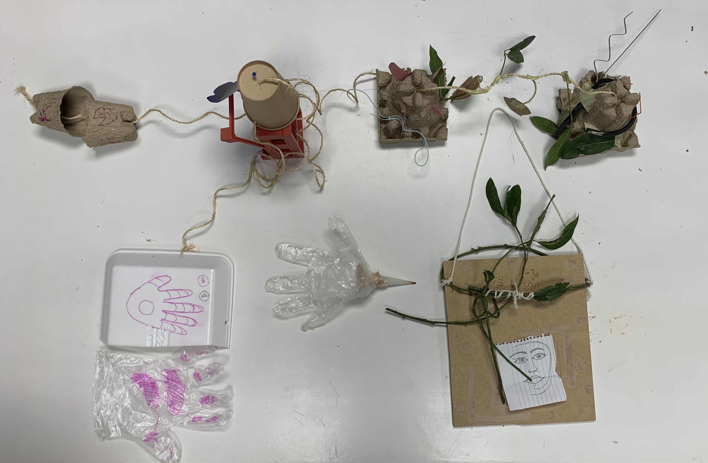
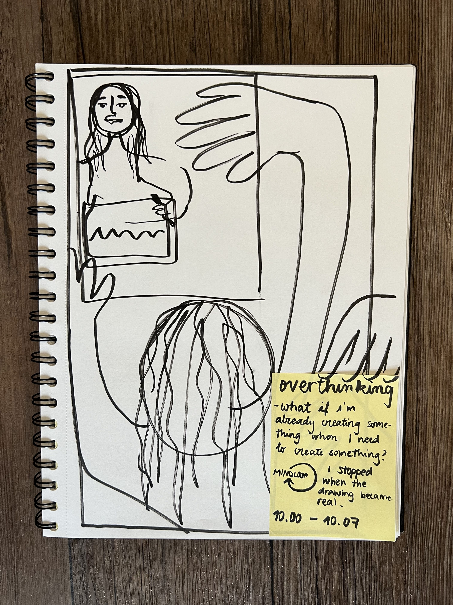

Magic Machines
For the first activity of this course, we had to draw a quick self-portrait on a small piece of paper. Once that was complete, we then created "Magic Machines" for that version of our self, out of material waste. I was seated at the same table as my post-consumer group and we individually began putting pieces together. Our materials consisted of cardboard, 3D printer waste, scraps from the fablab and trash we found around IAAC.
Although we each created different objects, as a group we have found common meanings to our magic machines. The theme could be summarized as Human relationships, whether it be a machine that helps communication between two people (Marina), detect emotions through empathy (Emilio), find new ways of capturing potential friends (Rei), finding your loved ones (Roberto) or framing a moment (Me). Together, we all found ways to create something which interacts with one another, emotionally, intellectually or physically.

Our magic machines as a group
What I learned through my magic machine: sometimes it is important to find a way to stop the process of creation. As an artist, I can get wary of beginning a process for fear that the end result won't turn out as planned or that it will take too long to achieve. As a result, there are many moments when I don’t begin the process at all. Slowly, I am beginning to learn the importance of starting just for the sake of starting, without having any expectations of the end result. By doing so, I can practice my passions and get better at this practice regardless of the outcome. Once in a while, I’ll find out that the process is just as fruitful as the result of a magnificent piece of art.
My personal magic machine, a picture frame.
Exercise: First-person Exploration
Our task was to engage in a 24 hour intensive exercise in which we immerse ourselves in one particular topic of interest. Doing so, we would experience our ideas by embedding them into every facet of our lives. By moving our ideas from the structured routine of our lives into our every day chaos, we may generate new ideas an interesting outcomes.
After the Magic Machine activity, I had many questions lingering in my head involving the creative process, how to generate ideas and how to stop them. Sometimes I feel that in comparison to the rest of the class, that I lack a certain level of experience, especially when it comes to practical activities. This is due to multiple factors, including being 21, not having a “real job” yet and following most of my bachelor’s degree online, during the pandemic. I needed to gather valuable insight about these experiences by creating my own experiences and reflecting on the ideas I generated.
Boundaries and objectives:
From 9AM to 9PM I would set an alarm every hour which will force me to draw something in my sketchbook. The tools permitted were paper, pens, watercolours and coloured pencils. Each time, I will document how I felt during the process and what made me stop the drawing, relating back to the Magic Machines exercise. During this time, I will also document everything through video recordings on my camera, then edit everything together in a 2 minute video to present to the class.
Questions that came up during the activity:
When is a project or creation complete?
How do I determine when enough is enough? What do those feelings look like?
Will there be an observable trend amongst my creations? i.e. Similarity in nature or in process?
Will there ever be an overlap in timing, where I haven’t completed one task before the next one goes off?
Will each hour feel like too much? Will I have enough time to do other things too?
Will I feel worn out and exhausted or full of new inspiring ideas?
Will the camera interfere with the process?
What feelings will come up as I try to define what leads to concluding these processes?
Here is the final video:
Here are the 12 drawings I made during the exercise, along with the post-its describing the feelings, the reason why I stopped, the timing and any other observations:
9.00 reflective

10.00 overthinking
11.00 frustrated
12.00 relaxed
13.00 anxious
14.00 hungry (is that an emotion?)
15.00 focused
16.00 very stressed
17.00 i had no more post-its left.
18.00 _
19.00 non ho proprio voglia = i really don't feel like it (in italian)
Conclusions and biggest takeaways:
During this day, I decided to maintain my regular routine and not adjust it in any form in order to convey authenticity and see how this task would affect a normal day. I believe the result would be different if I were focused solely on the drawings, without having any additional tasks or preoccupations to deal with. I can imagine that in a peaceful environment on a day off, the exercise may have been more pleasant but also less revealing and fruitful.
Instead, I had my alarm ring in many inconvenient scenarios, such as the metro, the gym, during working hours, in public spaces and while I prepared my food. This discomfort generated ideas that may not have come out otherwise, but it also raised my anxiety. In addition to the random public drawing being awkward, the act of filming added an extra layer of discomfort, especially in the gym and public transit.
Moving on, another one of the most interesting observations was the contrast between the feelings I had when I was “in the mood” versus when I felt as though I was being interrupted. When in the mood or when I had an idea about what I was going to draw, I felt relaxed, inspired and ready to jot down my ideas. On the contrary, when I was interrupting other activities, such as working or eating, the task felt like a waste of time. I easily felt as though I was interrupting the flow of an already ongoing process, which may have been creative too.
This highlights an importance in timing; there is a fine line between feeling forced to do something and being encouraged to follow a routine. I once believed that by pushing myself to follow a not-so-sponteanous creative idea generating routine, I would be very productive. However, when in the right mood, the nudge to create felt encouraging and inspiring, but at times it got easily stressful.
I also found that my time awareness was amplified. At many moments during the day, I wondered what time it was, how many minutes were left until the following alarm, what I would come up with next and whether the action would interfere with my plans. This unfamiliar countdown in my head was overwhelming.
On the other hand, I noticed a deeper feeling of concentration arising when drawing during passive tasks, such as the online zoom call in a group. During the call, I mostly had to listen to what was being said rather than actively engage in a task. Given that my alarm rang at the beginning of the call, I needed to draw something during the zoom call. I noticed that even though one may think that I was distracted because I was engaged in a secondary activity, I actually felt as though I was listening deeper than I would have normally.
This may be a personal attribute, possibly because drawing feels casual and second nature to me. For a person who does not like to draw or does not feel used to drawing, it may be different, because they may feel as though they put more effort in the act of drawing. However, personally, I appreciated that I was engaged in the conversation despite doing something else at the same time. This means that drawing allows me to maintain my focus on a passive task, as opposed to using my phone or reading.
The most fundamental point I noticed through this immersive activity was the idea that the means influences the result. For example, during a long and shaky bus ride, the alarm went off. However, instead of fighting my surroundings and trying to paint neat straight lines using my watercolors, I found it much more satisfying to embrace my context and let the brushstrokes be jagged and uneven. I started off drawing the turquoise bus seats which only led to frustration in trying to get the lines and perspective right. Instead, painting the cloudy sunset outside was much more satisfying. The result was a creatively but purposefully messy cluster of watercolours which not only looked better but felt better to paint.
Flaws and considerations
Since my inquiry was quite personal, the video and conclusions are also mostly relevant for myself. By involving myself throughout the entire process, the results were very personal. Although there are certain aspects that could be generalised and applied to other people’s lives, I am not sure whether my experience can be generalised. Going into the activity, this was not my worry because I was fine with raising personal questions, however after observing my peers' work I began to question how important my personal quest could be.
How does this change my future work
As a creative person, it can be difficult to manage personal creativity along with professional or educational creativity. What I mean by this is that when one is required to generate good ideas in work/school life but also uses their creativity in their hobbies or personal life, it is easy to feel burned out or uninspired. Consequently, it's important to find new stimulations or activities which either relax us or push us to come up with new ideas. Both anxiety and relaxation can yield interesting results, depending on the context, and I believe that this activity proved it quite well. The importance is to know when to use either method, and that will vary from person to person.
By forcing myself to constantly externalise my thoughts, I believe that I really learned how to live with my own ideas, when enough is enough and how to manage them. As a result, I believe that this can enhance future projects of mine.
If you would like to see my notes on the lectures from this week and the entire process, click here.